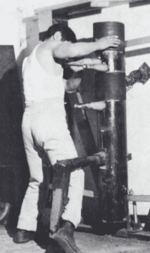
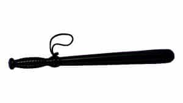
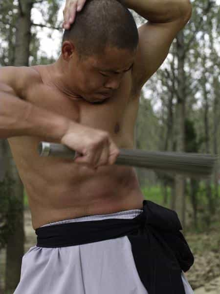
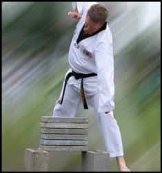

< < < Back
3 More Methods Of Body Hardening – Return Of Kings
If you will recall, a few weeks ago I wrote an article on body hardening, a concept in martial arts where the muscles and bones are deliberately subjected to trauma in order to strengthen and prepare them for delivering their own punishment to an opponent.
In that article, I discussed two methods: sandblasting (using the fingers to strike loads of beans, sand, or BBs to strengthen them for the finger attacks typical of such kung fu styles as the Praying Mantis), and bottle rolling, which is done to the shins to deaden them to pain. In addition to describing their body hardening roles, I also described how such body hardening techniques can be used as a form of conventional strength training as well.
This article will provide three more methods of body hardening that are predominantly used to benefit the combat athlete, but can also be used for general purpose strength training or cardiovascular training:
1. Hitting the bag
This is the method of body hardening that is most typically used nowadays, to the point where many martial arts schools won’t even do a lot of the more esoteric body hardening techniques. Indeed, hitting a heavy bag with proper form will condition the bones and tendons of the striking limbs to withstand the force of a strike—it seems pretty obvious, and it indeed makes sense according to the “greasing the groove” concept. Doing something a lot will make you better at it.
In addition to its body hardening benefits, hitting the bag serves as a reasonable cardiovascular workout as well, which can be done for both sustained periods of time equivalent to a jog or rapid intervals equivalent to the High Intensity Interval Training that fitness websites talk about every so often. In addition to cardiovascular training and body hardening, heavy bag work—or hitting an equivalent such as a makiwara, mu ren zhuang, or your nearest banana palm—will develop your muscular endurance as well-the “broken rhythm” of fighting will make the uninitiated’s muscles sore like no other type of workout.

2. Iron Body
“Iron body” training is one of those concepts that most people have a dim idea of from popular culture-perhaps you have seen films such as Enter the Dragon or Tiger and Crane Fist demonstrating this technique, or have seen video footage of kung fu masters taking kicks to the groin without flinching, such as in the featured image.
While I have never willingly taken a kick to the batch, this technique involves a combination of proper posture (thrusting the hips forward so the impact is divided between the groin and the buttocks) and muscular control over the inguinal canal, and is beyond the reach of this article.
Instead the iron body technique that I am familiar with is the one that conditions the body to absorb pain from an opponent by subjecting the body to controlled impact. While the movies always show this as something that is done with a partner—or more often than not, a supplicating student ordered to by his master—you can utilize iron body by yourself with just a couple of easy-to-find tools.
First off, you’ll need a cudgel—not a large, double handed club—ie: don’t use a baseball bat, shillelagh, or something similar—but something around the size of a police billy club. Tonfas, tetsubos, or even a decent sized stick from your backyard will suffice.

Then, strip to the waist-you need a bare chest for this one. Inhale, flex all of the muscles of your torso, and begin striking your tensed muscles while steadily exhaling. Bear in mind that you should not be striking yourself to the point of actually causing long term injury, but you should be hitting yourself hard enough to sting. The impact should be audible, and your skin should begin to welt. After you’ve bruised your torso sufficiently, try doing this to your arms and legs, particularly your shins and forearms, both of which can be used to block or strike.
The key is to build up your tolerance to pain gradually: once your normal striking doesn’t welt your skin, increase the force. Eventually, you can switch from a wooden club to a metal one, such as a lead pipe. And like the bag kicking, this is a sign of muscular endurance development.

3. Breaking
Breaking will forever be associated with martial arts, and rightfully so: the whole purpose of breaking is to get the fear of striking out of the trainee, and teach them to “follow through” with their strikes. While it seems like something completely divorced from the mundane physical culturist, I can happily say that breaking is much easier than it seems, although it still requires training and gradual body hardening.
The first thing to realize with breaking is that 50% of it is in how you position the objects. The boards, bricks, or sheets of ice (my personal favorite because it doesn’t leave any solid waste) have to be positioned resting upon two objects, with as much of the surface area of the to-be-broken object hanging in the air as possible. Observe the picture below.

From here, strike the object and follow through. It’s not very difficult for one, but difficulty will increase as you stack more and more of them atop each other. The limb that strikes the board will become stronger very quickly, and will continue to become stronger with successive practice.
Conclusion
The body hardening techniques I have provided for you will suit all of your martial arts needs, as well as secondary functions of general fitness. While these are not the only body hardening techniques out there, I will admit I am not familiar with qigong or other forms of meditation.
Enjoy, and be safe.
Read More: How To Begin Hardening Your Bones, Tendons, And Flesh To Endure Monstrous Punishment